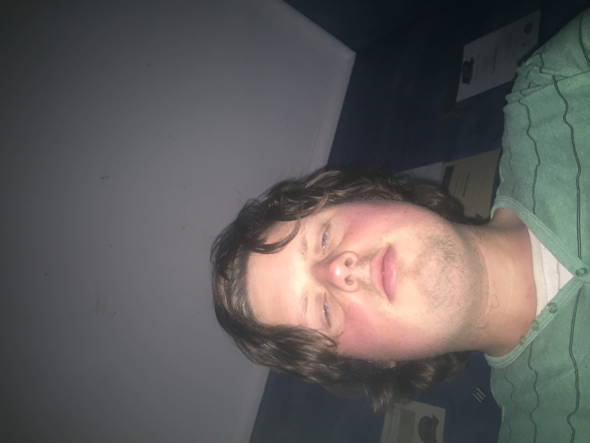

About Me

- OS Reimagined current
Overview
This is a new 3rd party client for the online game Old School Runescape. Third party clients in terms of gaming are clients that the user can download to play the game that aren't the vanilla client. Often they will have features and plugins that
improve the user experience. This particular client will allow users toggle the graphical style of their favourite era of Runescape.
Motivation
There have been calls within the OSRS(Old School Runescape) community for Jagex to offer a toggleable Runescape HD graphics. Runescape HD was a significant graphical
overhaul of the original Runescape back in 2008. As Old School Runescape started out as a backup of Runescape from 2007, this had never been implemented in
OSRS due to engine limitations. This project aims to develop a special client for the game that allows players to play the game with a graphical style of their
choosing. I am keen on this project because it will allow players to relive the nostalgia of the pre-EOC era and also to bring new players into the game with
modern graphics. Newer players have found that while they enjoyed the gameplay, the game was just not visually appealing.
Description
Old School Runescape was given it's name because it was an exact copy of Runescape from 2007. It came about due to the Runescape player base's dissatisfaction with the
Evolution of Combat(EOC) update, a complete overhaul of the game's combat system. Launched in 2013, OSRS has undergone significant content and quality of life
updates that it now no longer resembles the game when it first launch and has taken on a life of its own. The only features keeping it "old school" are its
turn-based combat system, the lack of microtransactions(MTx) and its retro graphics. The players are overwhelming against changing the first two but there is
strong support for the latter.
There have been several clients released throughout the years to streamline the gameplay experience and make the game more accessible. Runelite, the most popular client,
has features such as animation smoothing and Interface styles. Interface styles is a mini version of this project, where the user can toggle the interface used in
different eras of Runescape. This particular client will give players an option to toggle a particular graphical style of their choosing without disappointing
the players who prefer the old school style.
This isn't the first attempt at implementing Runescape HD-style graphics into OSRS, however. In 2017, OSHD was shut down by Jagex shortly after
release because of concerns it would interfere with account security and bot detection systems. OSHD was supposed to transform the standard OSRS graphics
into HD visuals that resembled modern day games by utilising GPU computing. Thus, this project aims to not only make OSRS more visually appealing but a client
that Jagex approves of and one that the community can safely use.
Similar features have been implemented in other games. In Minecraft, shaders and texture packs transform the visuals of the game. This has what attracted so many
players to the game and made their experience pleasant. This graphical add-on also does not affect the expeirence of other players in the game. This shows that
the core mechanics of a game do not have to change for it to feel like a completely different experience. Some people like simple 2D graphics and others prefer a
more realistic look.
Throughout the years, Runescape has undergone a series of graphical changes. A big part of the players' nostalgia for a certain era is the graphics. Offeing a client that
allows players to toggle graphics would maximise the satisfaction of the existing players and would help to attract new players. OS Reimagined attempts to give
players a choice of different graphical styles without affecting their core gameplay. This could be Runescape Classic graphcs, 2011 graphics or even the modern
graphics. The mechanics of the game would not change and everyone would still be playing on the same servers.
Currently, the biggest turnoff for OSRS is the graphics. But what if OSRS had the visuals of a modern game but still had the same mechanics and gameplay.
It could compete with other modern MMOs for new players.
If the most detailed graphics were implemented, it would probably target new players as the current player base are nostalgic for earlier versions of the original Runescape.
The client will have a whole range of customisable graphics. In particular, 3 graphical options come to mind; Ultra HD, Runescape HD and enchanced vanilla. Ultra HD
attempts to modernise the graphics as much as possible. Ideally, I want to make the graphics as close to Runescape 3 as possible. Runescape HD option essentially
tries to mimic the graphics of the Runescape HD era(2008-2012). Finally, enhanced vanilla differs from the first 2 in that it isn't a total graphical overhaul of
the vanilla client but just tries to make the game less laggy and more playable. This will merely upgrade features such as FPS and rendering. This isn't a
traditional Java client but will instead use the Unity engine to develop.
The client will also allow you to edit the visual features of the game such as the weather. Currently, the vanilla client is just a pitch black sky beyond the rendering
distance. The client Runelite has improved this slightly implementing a plugin called Skybox which allows users to toggle a blue sky in place of the black area.
Skybox feature in Runelite compared to the vanilla
https://www.reddit.com/r/OSHD/comments/6f0kkc/oshd_oldschool_runescape_in_high_detail/
This feature would give more visual appeal to the Gielenor sky. For example, you could set the time of day it is in Gielinor(The name of the Runescape world). It could
be even tailored it to the time of day in your timezone. The Gielenor sky would also have it's own weather. For example, it could be windy in Varrock or raining on
Karamja.
Lumbridge at night. Edited with paint.
Finally, the project will need to be compatible with Jagex's bot detection systems and community would like to feel that their account is secure when using this client.
That is why the community will be able to view the source code during its development and after release.
Tools
For OSRS reimagined to work, access to some of the source code for OSRS is required. Luckily, OSRS is open source to ensure transparency between Jagex and the players. The code will then be needed to be translated from Java into C#. This will allow it to be placed in the unity graphics engine. Unity is a game engine that makes development of games with sophisticated graphics a lot simpler. The engine can be used to create three-dimensional, two-dimensional, virtual reality, and augmented reality games, as well as simulations and other experiences.There is also a possibility that I need a computer with more powerful specs than I currently have. Most importantly though, Jagex will need to get on board with this project as they have blocked similar projects in the past. Finally, it needs to be compatible with their bot detection and account security systems but this may need work on Jagex's part. This is to ensure players are not false banned for botting when using this client
Skills
This project is feasible, but it won't be easy. I have limited experience in programming, with only basic knowlege in C++ and Java. I have never used the Unity engine and do not have any exprience in C#. However, since I started playing Runescape again I have become quite curious about how the game is developed. While my programming experience is miniscule, my love for the game and willingness to learn can ensure OS reimagined can at least get started. Thus, the basic resources I will need are Unity, the OSRS source code, programming experience and possibly a very powerful computer.
Outcome
If this project is successful, it could open up a range of new and exciting opportunies for the game. It would certainly satisfy the existing player base as players
could play with the graphics of their favourite era of Runescape. OS reimagined would also attract new players to the game with the modern graphics option.
Ultimately, the game would remove the outdated graphics as a barrier of entry to the game and would allow players to optimise their own gameplay experience
while also being able to play on the same servers as other players.